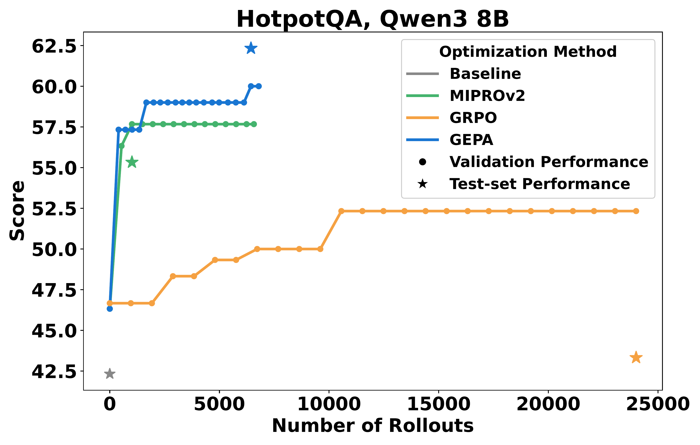
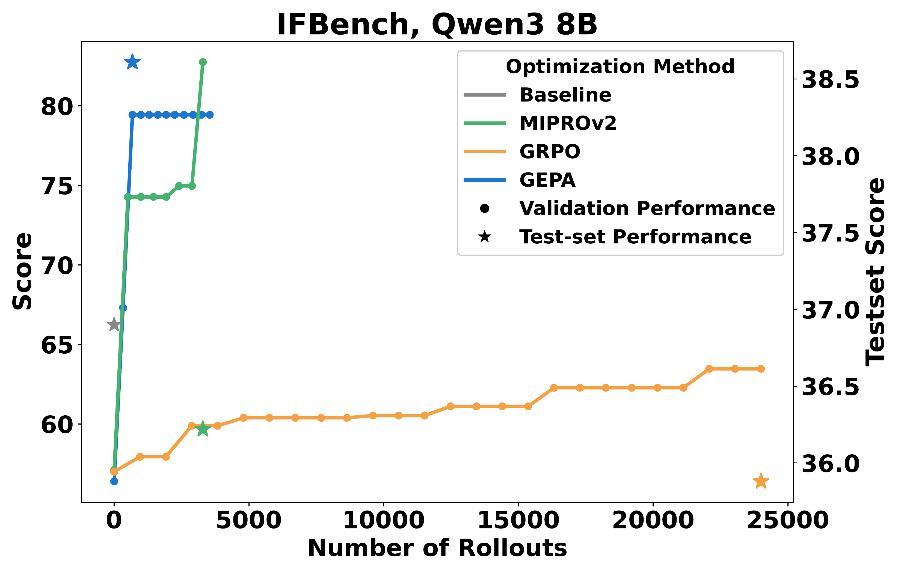
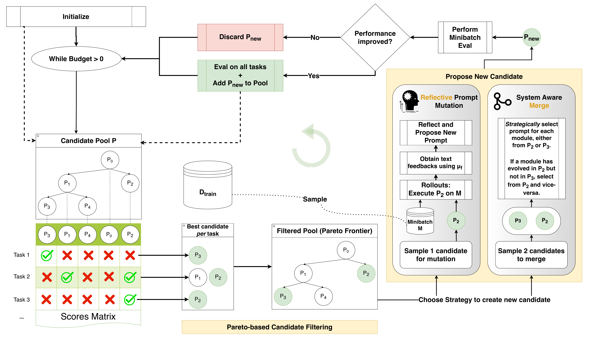
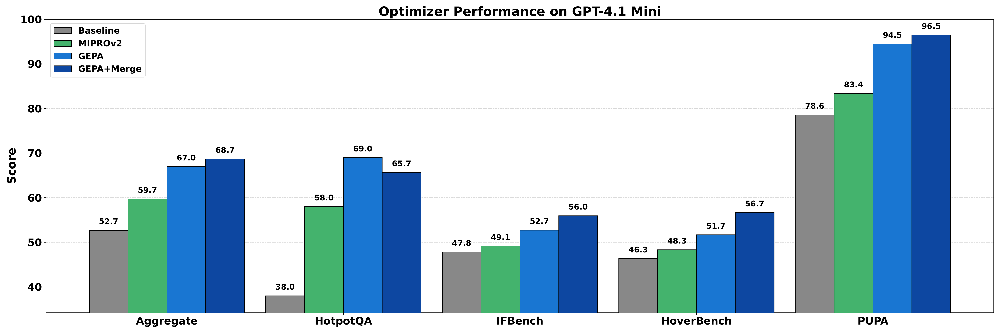
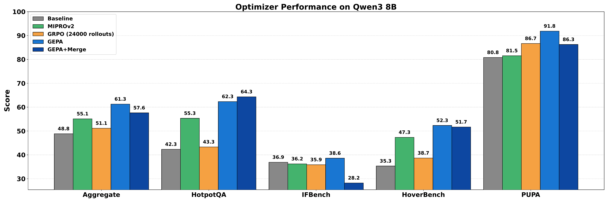
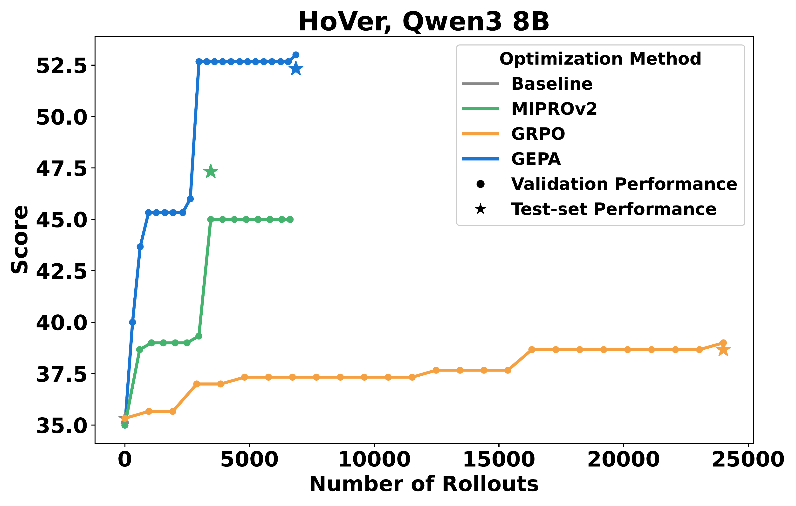
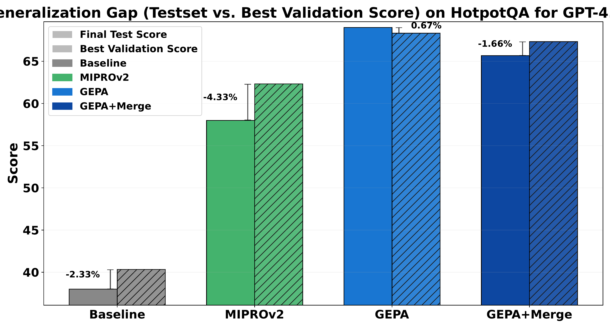
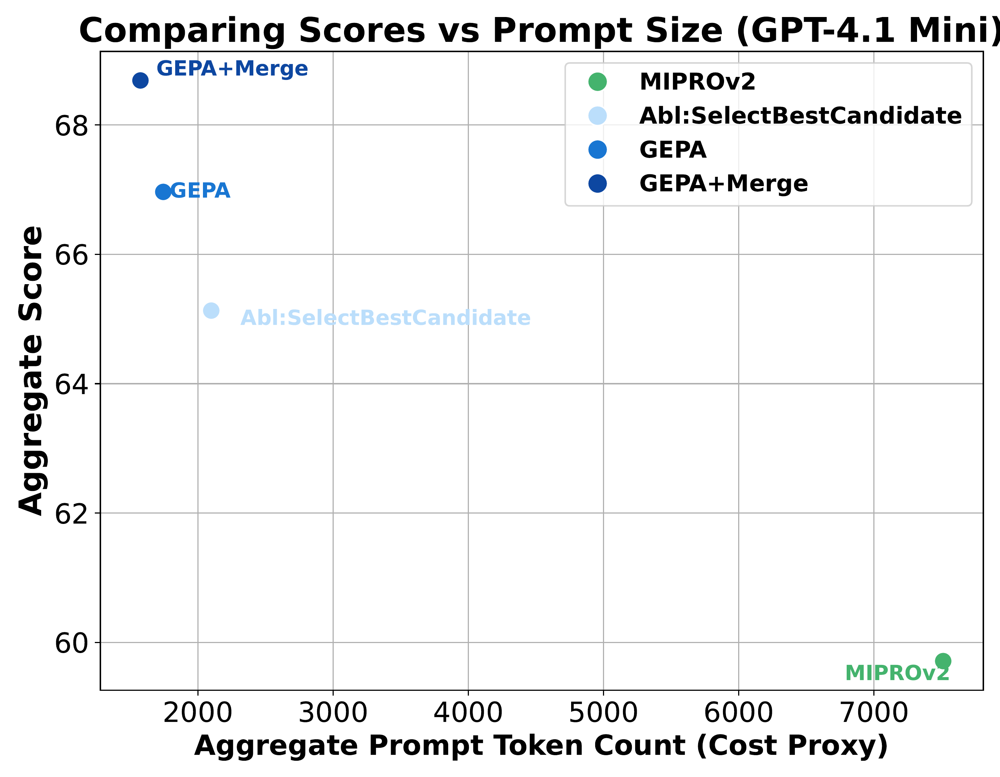
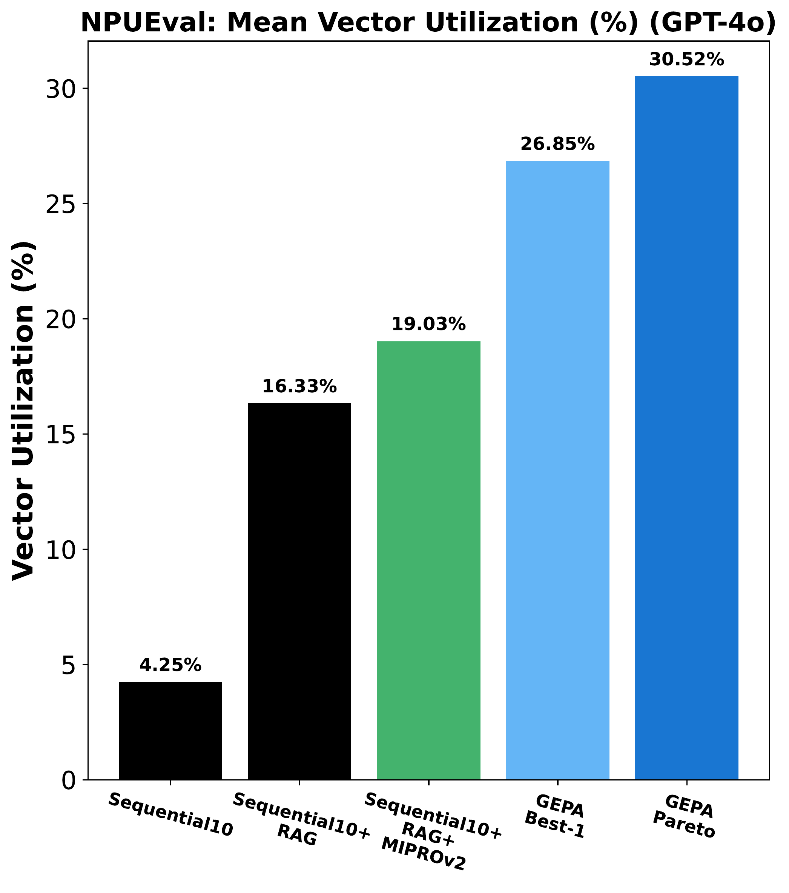

论文 ID: 2507.19457
标题: GEPA: Reflective Prompt Evolution Can Outperform Reinforcement Learning
作者: Lakshya A Agrawal, Shangyin Tan, Dilara Soylu, Noah Ziems, Rishi Khare, Krista Opsahl-Ong, Arnav Singhvi, Herumb Shandilya, Michael J Ryan, Meng Jiang, Christopher Potts, Koushik Sen, Alexandros G. Dimakis, Ion Stoica, Dan Klein, Matei Zaharia, Omar Khattab
单位: UC Berkeley, Stanford, BespokeLabs.ai, Notre Dame, Databricks, MIT
会议/期刊: ICLR 2026 (投稿中)
原文保存位置: ~/.openclaw/workspace/papers/20260306_GEPA/source/
报告生成日期: 2026-03-06
大型语言模型（LLM）越来越多地通过强化学习（RL）方法（如 GRPO）适配到下游任务，这类方法往往需要数千次 rollout 才能学习新任务。本文认为，语言的可解释性为 LLM 提供了比策略梯度（来自稀疏标量奖励）更丰富的学习媒介。为此，我们提出 GEPA（Genetic-Pareto），一种通过融入自然语言反思来从试错中学习高层规则的 Prompt 优化器。
给定任何包含一个或多个 LLM Prompt 的 AI 系统，GEPA 对轨迹（推理链、工具调用及其输出等）进行采样，并以自然语言反思这些轨迹，从而诊断问题、提出并测试 Prompt 更新，以及结合来自自身尝试的 Pareto 前沿的互补经验教训。
在六个任务上，GEPA 平均比 GRPO 高出 6%，最高超出 20%，且使用的 rollout 数量最多少 35 倍。GEPA 还以超过 10% 的幅度超越当前最优 Prompt 优化器 MIPROv2（例如，在 AIME-2025 上精度提升 +12%）。代码已在 https://github.com/gepa-ai/gepa 开源。
论文 ID: 2507.19457
标题: GEPA: Reflective Prompt Evolution Can Outperform Reinforcement Learning
作者: Lakshya A Agrawal¹, Shangyin Tan¹, Dilara Soylu², Noah Ziems⁴,
Rishi Khare¹, Krista Opsahl-Ong⁵, Arnav Singhvi²˒⁵,
Herumb Shandilya², Michael J Ryan², Meng Jiang⁴,
Christopher Potts², Koushik Sen¹, Alexandros G. Dimakis¹˒³,
Ion Stoica¹, Dan Klein¹, Matei Zaharia¹˒⁵, Omar Khattab⁶
单位: ¹UC Berkeley ²Stanford ³BespokeLabs.ai
⁴Notre Dame ⁵Databricks ⁶MIT
会议/期刊: ICLR 2026
原文保存位置: ~/.openclaw/workspace/papers/20260306_GEPA/source/
报告生成日期: 2026-03-06
大型语言模型使能了将模糊自然语言规范与检索、代码执行等工具相结合的 Agent 和系统的开发。一个核心问题是：如何针对下游任务高效地优化 LLM？
一种主流方法是带可验证奖励的强化学习（RLVR），例如 GRPO，将成功指标作为 rollout 末尾的标量奖励，用于估计策略梯度。这类 RL 方法虽然有效，但在实践中通常需要数万次 rollout 来适配新任务。这种样本低效性在以下情形中会成为严重瓶颈：
本文的核心观察是：即使是高度复杂的 LLM 系统的 rollout，也可以被序列化为自然语言轨迹——包含每个 LLM 模块的指令、推理链、工具调用及其输出，以及奖励函数的内部工作过程（例如在被折叠为标量奖励之前的编译器报错信息）。由于现代 LLM 能够理解这些序列化轨迹，本文认为通过反思这些轨迹在自然语言中刻意学习的算法，能够比标准 RL 方法更有效地利用 LLM 的强大语言先验。

图 1（左）：HotpotQA 任务上 Qwen3 8B 的性能对比。随着 rollout 数量增加，GEPA 的学习速度远快于 GRPO，且最终性能大幅超越 GRPO 和 MIPROv2。测试集（星形标记）上的性能差距验证了 GEPA 的泛化能力。
:::

图 1（右）：IFBench 任务上 Qwen3 8B 的性能对比。GEPA 以显著更少的 rollout 实现更高性能。
:::
本文将复合 AI 系统定义为由一个或多个语言模型调用组成的模块化系统，可能与外部工具调用交叉，通过任意控制流协调。形式化为：
$$\Phi = (M, C, \mathcal{X}, \mathcal{Y})$$其中 $M = \langle M_1, \ldots, M_{|M|} \rangle$ 为语言模块集合，$C$ 为控制流逻辑，$\mathcal{X}$、$\mathcal{Y}$ 为全局输入输出模式。每个模块定义为：
$$M_i = (\pi_i, \theta_i, \mathcal{X}_i, \mathcal{Y}_i)$$其中 $\pi_i$ 为 Prompt（指令+少样本示例），$\theta_i$ 为底层模型权重，$\mathcal{X}_i$、$\mathcal{Y}_i$ 为输入输出模式。
给定系统 $\Phi$，设 $\Pi_\Phi = \langle \pi_1, \ldots, \pi_{|M|}\rangle$ 为所有模块 Prompt 的集合，$\Theta_\Phi = \langle \theta_1, \ldots, \theta_{|M|}\rangle$ 为权重集合，可学习参数为 $\langle \Pi, \Theta \rangle_\Phi$。优化目标为：
$$\langle \Pi^*, \Theta^* \rangle_\Phi = \arg\max_{\langle \Pi, \Theta \rangle_\Phi} \mathbb{E}_{(x, m) \sim \mathcal{T}} \left[ \mu\big( \Phi(x; \langle \Pi, \Theta \rangle_\Phi),\, m \big) \right]$$在许多现实场景中，rollout（具体而言，调用 $\Phi$ 并由 $\mu$ 评估）的计算、资金或时间成本都很高昂。因此优化器被限制在数据集 $\mathcal{D}_\text{train} = \{ (x, m)_i \}_{i=1}^N$ 上最多 $B$ 次 rollout 内，目标是在不超过 rollout 预算 $B$ 的约束下，找到使泛化性能最大化的参数：
$$\langle \Pi^*, \Theta^* \rangle_\Phi = \arg\max_{\langle \Pi, \Theta \rangle_\Phi} \mathbb{E}_{(x, m) \sim \mathcal{T}} \left[ \mu\big( \Phi(x; \langle \Pi, \Theta \rangle_\Phi),\, m \big) \right], \quad \text{s.t.} \quad \#\text{rollouts} \leq B$$核心挑战是：如何从每次昂贵的 rollout 中提取最大学习信号，以在低数据或预算受限环境下实现复杂模块化 AI 系统的有效适配？
GEPA 由三个核心原则驱动：（1）遗传 Prompt 进化、（2）利用自然语言反馈的反思、（3）基于 Pareto 的候选选择。

图 2：GEPA 概览图。GEPA 在每次迭代中通过两种策略之一（反思性 Prompt 突变或系统感知合并）提出新候选，首先在小批量上评估，若有提升则在更大数据集上评估。GEPA 引入基于 Pareto 的候选采样而非总是选择最优候选，确保足够多样性。这些设计使 GEPA 在样本高效的同时展现强泛化能力。
:::
给定 AI 系统 $\Phi$，GEPA 的目标是找到最优参数 $\Pi_\Phi$（保持权重 $\Theta_\Phi$ 固定）。GEPA 从包含基础系统的候选池 $\mathcal{P}$ 开始，每个候选为 $\langle \Pi, \Theta_{frozen} \rangle_\Phi$ 的具体实例化。
算法进入优化循环，通过反思性突变或交叉不断提出新候选，每个候选从其父候选处继承学习信号，并结合自身 rollout 的洞察。每次迭代：
预算耗尽后，GEPA 返回在 $D_{pareto}$ 上聚合性能最佳的候选。
GEPA 核心算法（Algorithm 1）：
$$\text{GEPA}(\Phi, \mathcal{D}_{train}, \mu, \mu_f, B, b) \to \Phi^*$$输入: 系统 Φ, 数据集 D_train, 评估指标 μ, 反馈函数 μ_f, 预算 B
超参: 小批量大小 b, Pareto 集合大小 n_pareto
1: 将 D_train 划分为 D_feedback 和 D_pareto (|D_pareto| = n_pareto)
2: 初始化候选集 P ← [Φ], 父节点 A ← [None]
3: 对 D_pareto 中每个 (x_i, m_i)：S_Φ[i] ← μ(Φ(x_i), m_i)
4: while 预算 B 未耗尽:
5: k ← SelectCandidate(P, S)
6: j ← SelectModule(Φ_k)
7: M ← 从 D_feedback 采样大小为 b 的小批量
8: 收集 Φ_k[j] 在 M 上的反馈、分数、轨迹
9: π_j' ← UpdatePrompt(π_j, feedbacks, traces[j])
10: Φ' ← Φ_k 的副本，模块 j 更新为 π_j'
11: σ, σ' ← M 上的平均分数（更新前后）
12: if σ' 提升:
13: 将 Φ' 加入 P; 将 k 加入 A
14: 对 D_pareto 中每个 (x_i, m_i): S_Φ'[i] ← μ(Φ'(x_i), m_i)
15: return Φ* = P 中在 D_pareto 上平均分数最高的候选
复合 AI 系统执行过程中产生的自然语言轨迹为每个模块的行为提供了高度可见性——捕获每个模块的中间推理步骤和输出。当这些轨迹与 rollout 的最终结果（成功或失败）结合时，具有极高的诊断价值，LLM 可以通过反思执行隐式信用分配，将最终结果归因到相关模块，并据此进行目标性更新。
反馈函数 $\mu_f$（评估轨迹作为诊断信号）： 除了对执行轨迹进行反思，本文还识别了评估轨迹中的第二个宝贵诊断信息来源。许多评估指标应用丰富的策略（如代码评估可能涉及编译、执行和性能分析），在计算标量奖励前会产生自然语言轨迹。GEPA 通过将奖励 $\mu$ 扩展为反馈函数 $\mu_f$ 来利用这些评估轨迹，$\mu_f$ 提取文本轨迹，并将其与最终分数一起作为 feedback_text 返回。
GEPA Meta-Prompt（用于 Prompt 反思更新）：
我提供了以下指令让 assistant 完成一项任务：
<当前指令>
以下是提供给 assistant 的不同任务输入示例，以及 assistant 对每个任务的响应和改进反馈：
<输入、输出和反馈的小批量示例>
你的任务是为 assistant 编写新的指令。
仔细阅读输入，识别输入格式并推断我希望用 assistant 解决的任务的详细描述。
阅读所有 assistant 响应及其对应反馈，识别所有细微的领域特定知识，并将其包含在指令中。
在 ``` 块中提供新指令。
GEPA 是一个高度模块化的算法，支持各种候选选择策略。简单地总是选择最优候选会导致优化器陷入局部最优：一旦发现一个主导策略，就很难超越，优化器最终耗尽预算而无法学习新的、可能更好的策略。
为此，GEPA 采用基于 Pareto 的"光照"策略（受 MAP-Elites 启发）。
Pareto 候选选择算法（Algorithm 2）：
SelectCandidate(P, S):
1: // 构建逐实例 Pareto 集合
2: 对每个 i:
3: s*[i] ← max_k S_{P[k]}[i]
4: P*[i] ← {P[k] : S_{P[k]}[i] = s*[i]}
5: C ← ∪_i P*[i] 中的唯一候选
6: D ← ∅
7: while 存在 Φ ∈ C\D 被 C\D 中的另一候选支配:
8: D ← D ∪ {Φ}
9: 从 P*[i] 中移除 D，得到 P̂*[i]
10: 设 f[Φ] = Φ ∈ P̂*[i] 的 i 的个数
11: 从 Ĉ 中以概率 ∝ f[Φ_k] 采样 Φ_k
12: return Φ_k 在 P 中的索引 k
这个策略允许 GEPA 逃离局部最优，而不过度扩展搜索，在探索（寻找新策略）和利用（改进有潜力的候选）之间高效平衡。
基准测试（六个多样化任务）：
基准复合 AI 系统：
| 基准 | 复合 AI 系统 | 反馈函数 |
|---|---|---|
| HotpotQA | 修改版 HoverMultiHop（最后一跳回答问题） | 识别各阶段待检索的相关文档 |
| IFBench | 2阶段：(1)回答用户查询，(2)改写以满足约束 | 提供满足/未满足的约束描述 |
| AIME-2025 | 单步 ChainOfThought | 答案正确性 |
| HoVer | HoverMultiHop（最多3跳，2个查询写作模块） | 识别已检索/待检索的正确文档 |
| PUPA | PAPILLON（可信用户查询改写器+响应改写器+不可信模型） | 响应质量分数+PII泄漏分数的分解 |
模型：
对比基准：
表 1：Qwen3 8B 上各基准的主要结果（Test 集）
| 优化器 | AIME | LiveBench | HotpotQA | IFBench | HoVer | PUPA | 聚合 |
|---|---|---|---|---|---|---|---|
| Baseline | 基线 | 基线 | 基线 | 基线 | 基线 | 基线 | 基线 |
| GRPO | +△ | - | +△ | +△ | +△ | +△ | +5.7% |
| MIPROv2 | +△ | +△ | +△ | +△ | +△ | +△ | +5.64% |
| GEPA | +△ | +△ | +△ | +△ | +△ | +△ | +12.1% |
| GEPA+Merge | +△ | +△ | +△ | +△ | +△ | +△ | 最高 |
注：GEPA 使用的 rollout 数量不到 GRPO 的 15%，即可实现更高聚合性能
表 2：GPT-4.1 Mini 上各基准的主要结果
| 优化器 | 聚合提升 | |--------|---------| | Baseline | 0% | | Trace | +3.27% | | TextGrad | +6.11% | | MIPROv2 | +5.64% | | GEPA | +13.33% | | GEPA+Merge | +12.19% | | GEPA-Qwen-Opt | +9.00% |（用 Qwen3 8B 优化，在 GPT-4.1 Mini 上评估）|

图 3：GPT-4.1 Mini 上各基准最终测试集性能对比。GEPA 和 GEPA+Merge 在所有任务上一致领先其他优化器。
:::

图 4：Qwen3 8B 上各基准最终测试集性能对比。GEPA 在多数任务上超越 GRPO（24,000 rollouts）。
:::
观察 1：反思性 Prompt 进化高度样本高效，可超越权重空间强化学习
在四个基准上，GEPA 在复合 AI 系统中快速适配并稳健泛化——以最多 $35\times$ 更少的 rollout 击败 GRPO（24,000 rollouts）最高 19%。GEPA 以 4–35× 更少的 rollout 达到最优测试性能，在 5 个中的 6 个任务上超越 GRPO，分别超出 19.0%、2.73%、13.66%、5.19% 和 0.7%。GEPA 仅用 243、402、330、1143、1179 和 306 次 rollout 即匹配 GRPO 的最佳验证分数——样本效率最高提升 78 倍。
重要说明：大多数 GEPA 的 rollout 预算用于验证集，这些分数仅用于候选选择，不产生学习信号。若只统计训练集 rollouts，GEPA 仅需 79 至 737 次 rollouts 即可达到最优性能。

图 5：HoVer 任务上性能-rollout 曲线。GEPA 快速超过 GRPO 最优性能，效率优势明显。
:::
观察 2：反思性 Prompt 进化使仅指令优化即可超越联合指令+少样本优化
在两个模型和六个任务上，GEPA 在所有设置中一致超越 MIPROv2，最大差距为 GPT-4.1 mini 的 11.1% 和 Qwen3 8B 的 10.3%。GEPA 和 GEPA+Merge 将聚合增益放大超过一倍（+13.33% 和 +12.19% vs MIPROv2 的 +5.64%）。
这一结果与此前 MIPROv2 和相关工作的发现（少样本示例优化优于指令优化）形成反转，本文将其归因于现代 LLM 指令遵循和自我反思能力的显著提升。

图 6：泛化差距（验证集最佳分数与测试集分数之差）对比。反思性进化的指令展现出更低的泛化差距，说明更好的泛化能力。
:::
观察 3：候选选择策略对优化轨迹和最终性能有显著影响，Pareto 采样提供独特优势
与总是选择最优候选的 SelectBestCandidate 策略（类似 TextGrad）和 BeamSearch(N=4)（类似 APO）相比：
总是选择当前最优候选会在下一次迭代中立即改善，但随后导致优化器停滞，将所有预算用于尝试改进这一个候选。相比之下，Pareto 采样通过考虑所有 Pareto 最优候选（所有已发现的"获胜"策略）来扩展搜索，在探索和利用之间保持紧密平衡。
观察 4：指令优化的 Prompt 在计算上更经济且泛化更好
GEPA 生成的指令优化 Prompt 与 MIPROv2 相比：
这对于实际部署具有重要价值：API 提供商按输入 token 计费，更短的 Prompt 降低运行时成本，减少延迟，提升 LLM 推理系统整体效率。

图 7：GPT-4.1 Mini 聚合性能 vs. 聚合 Prompt 大小。GEPA 持续产生约 MIPROv2 33% 大小的 Prompt，同时实现更高性能。
:::
观察 5：系统感知交叉策略（Merge）可带来大幅收益，但最优预算分配需进一步研究
GEPA+Merge 可以比 GEPA 单独优化再额外提升最高 5%，带来额外 2% 的聚合改善。Merge 策略（附录算法详述）通过识别独立优化谱系（已学习互补策略），并通过从每个谱系挑选不同模块的最优版本来合并，提出单一最优候选。
然而，在 GPT-4.1 Mini 上 Merge 效果显著，而在 Qwen3 8B 上效果不稳定——这归因于反思突变和交叉之间的预算分配问题，以及调用 Merge 的时机选择。
观察 6：GEPA 优化的 Prompt 展现跨模型泛化能力
"GEPA-Qwen-Opt"（用 Qwen3-8B 优化，在 GPT-4.1-Mini 上评估）的配置：
GEPA 也可用作推理时搜索技术：将待解决的任务集作为训练集传给 GEPA，确保 $D_{train}$ 和 $D_{pareto}$ 都包含完整任务集，GEPA 可"过拟合"任务集，迭代提出更好的解决方案。
NPU 内核生成（AMD XDNA2 架构）：
CUDA 内核生成（KernelBench，NVIDIA V100）：

图 8：GEPA 用于 NPU 内核生成的结果。GEPA 驱动的 GPT-4o Agent 实现均值 30.52% 的向量利用率，远超 RAG+MIPROv2 的 19.03%。
:::
通过反转奖励信号（寻找最小化任务性能的 Prompt），GEPA 可发现对抗性 Prompt：
生成的对抗性指令（节选）包含无关琐事（"蜂蜜永不变质"、"尼罗河是世界最长河流"）和重复的格式约束，导致模型字面输出占位符 ### <final answer>，而非实际答案。
这表明反思性 Prompt 进化不仅能改善系统，还能通过定位通用的、查询无关的扰动来进行系统压力测试。
Prompt 优化：自动 Prompt 优化方法（如 OPRO、PromptWizard 等）使用 LLM 自动优化 Prompt。GEPA 通过整合文本环境反馈、Pareto 感知候选搜索和每模块进化策略加以区分。
进化算法：EvoPrompt 进化 Prompt 种群但不利用训练反馈；AlphaEvolve 对代码进行进化搜索；Rainbow Teaming 应用质量多样性进化生成多样对抗性 Prompt。GEPA 额外使用领域特定反馈进行目标性突变，实现更高样本效率。
反馈驱动改进：Reflexion、Self-Refine、Dynamic Cheatsheet 等方法在语言空间中学习。GEPA 从示例中提出新指令（而非用作少样本示例），产生任务特定规则。
复合 AI 系统优化：DSPy 搜索/引导少样本示例；TextGrad 反向传播文本反馈；MIPROv2 通过贝叶斯优化联合对齐指令和示例；Optimas 引入全局对齐的局部奖励；Agent-Pro 通过动态信念生成和对交互经验的反思进化 Agent 策略。GEPA 将全局奖励与每模块文本反馈相结合，维护单个数据实例的 Pareto 前沿。
本文提出 GEPA，一个利用显式反思和基于 Pareto 选择的任意 LLM Agent 和工作流 Prompt 优化器，展现出比强化学习（GRPO）更优越的样本效率，同时超越领先的 Prompt 优化器（MIPROv2）。
通过显式融入自然语言反馈并维护多样化的 Pareto 最优候选池，GEPA 快速将 AI 系统适配到新任务。跨基准和模型的结果表明，语言驱动的反思可作为优化复杂现实世界 AI 工作流（尤其是资源受限场景）的可扩展策略。
Merge 策略（附录 B）：系统感知的遗传交叉策略
Merge(P, A, S, r):
1: i, j ← r.sample(2, |P|) // 随机选两个不同候选
2: A_i ← GetAncestors(i, A)
3: A_j ← GetAncestors(j, A)
4: if i ∈ A_j or j ∈ A_i: continue // 跳过直接祖先
5: for a ∈ A_i ∩ A_j: // 找共同祖先
6: if (i,j,a) 已尝试: continue
7: if S[a] > min(S[i], S[j]): continue
8: if not Desirable(a, i, j, P): continue
9: // 合并两个候选的最优模块
10: ...
11: return (Φ', i, j, a)
Desirable 函数确保只有当两个候选来自同一祖先但优化了不同模块时（互补策略）才执行合并。
GEPA 实验成本（GPT-4.1 mini 全部实验）：
自然语言反思作为学习媒介：论文的核心洞见是，LLM 轨迹的可解释性和诊断价值使自然语言反思成为比标量奖励梯度更高效的学习信号。这一直觉清晰而有力，并获得了广泛实验验证。
Pareto 基础的"光照"策略：借鉴 MAP-Elites 质量多样性优化思想，GEPA 将每个训练实例的最优候选维护在 Pareto 前沿上，有效避免了贪婪方法的局部最优问题，同时聚焦优化资源于有潜力的候选。
对评估轨迹的创造性利用：将评估过程（编译器报错、评分细则等）的自然语言输出转化为额外的诊断信号，这一"反馈函数"$\mu_f$ 的设计是实践中非常有价值的创新。
跨模型泛化：GEPA 用较弱模型（Qwen3 8B）优化的 Prompt 在更强模型（GPT-4.1 Mini）上仍获得显著提升，表明学到的规则具有通用性。
多种扩展应用：从任务优化（HotpotQA、IFBench 等）到推理时搜索（代码生成）再到对抗性 Prompt 发现，GEPA 的适应范围广泛。
仅优化指令，暂不优化少样本示例：当前 GEPA 专注于指令优化，在少样本示例能带来显著收益的任务上可能存在进一步提升空间。
验证集消耗大量 rollout 预算：GEPA 大多数计数的 rollout 实际用于验证集候选评估，而非直接用于产生学习信号。通过减小验证集规模可进一步提升样本效率。
Merge 策略的超参数敏感性：实验中对 GPT-4.1 Mini 和 Qwen3 8B 使用相同的 Merge 超参数，导致 Qwen3 8B 上效果欠佳。何时调用 Merge、如何分配反思突变与交叉的预算比例，有待进一步研究。
与全参数微调 GRPO 的比较有限：主要实验对比 LoRA GRPO，仅有一个任务展示了对全参数微调 GRPO 的比较。虽然结果仍有利于 GEPA，但全面对比尚不充分。
适用范围的边界尚不明确：在数据充足、rollout 廉价的情形下，权重更新（RL）可能仍会优于 Prompt 优化。Prompt 优化与权重优化之间的边界尚无系统研究。
高成本 API 工具调用场景：当每次 rollout 涉及昂贵的外部工具调用（搜索引擎、代码执行等）时，GEPA 的样本效率优势尤为突出。
闭源模型优化：对于无法进行权重微调的大型商业模型（如 GPT-4.1 Mini），GEPA 提供了一种纯 Prompt 层面的高效优化路径。
数据受限场景：仅需少量训练示例（数十到百余个），GEPA 即可取得显著提升。
推理时搜索：通过"过拟合"目标任务集，GEPA 可作为推理时搜索策略，适用于代码生成、科学计算等需要大量探索的领域。
AI 系统安全评估：对抗性 Prompt 搜索能力为系统安全测试和红队评估提供了自动化工具。
动态 Pareto 验证集采样：通过动态选择验证子集代替全量验证，可在保持候选选择质量的同时大幅减少 rollout 数量。
反馈工程：系统研究哪些执行或评估轨迹能为反思优化提供最有价值的学习信号（类比强化学习中的奖励工程），有望进一步提升 GEPA 的学习效率。
Prompt 与权重联合优化：将 GEPA 的语言驱动反思与权重空间的 RL 适配相结合（如用 GEPA 的语言经验教训引导 RL rollouts），可能产生叠加收益并统一两种优化范式。
自适应 Merge 策略：开发能够根据优化谱系的多样性程度自适应决定何时、以何种预算比例调用 Merge 的策略。
结合少样本示例优化：探索在 GEPA 的遗传进化框架内同时优化指令和少样本示例，有望在特定任务上取得更大提升。
报告由 OpenClaw 学术分析助手自动生成 | 2026-03-06